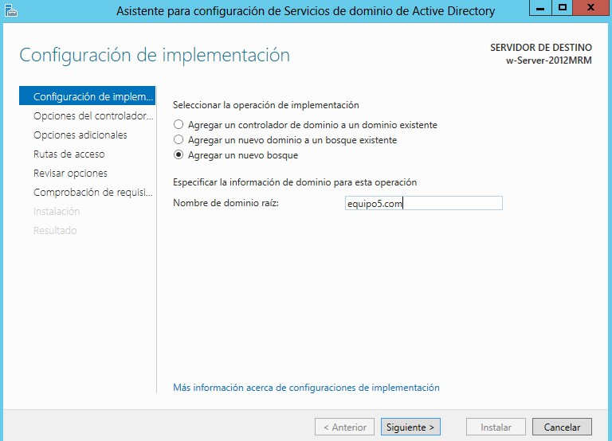

1. Mi primera modificacion

1. Mi primera modificacion
2. Aquí ingresamos a la preferencia de red y nos cambiamos como en la imagen siguiente para conectarnos a internet :)

3. Seleccionamos nuestro servidor y nos vamos a Roles de servidor
5. Nos arrojará a la siguiente ventana
6. Verificamos lo que se instalará junto con el Servicio de Active Directive
7. Nos arrojará está ventana y daremos clic en Agragar características
8. Ahora aparecerá en nuestra ventana seleccionado el servicio de dominio de Active Directory
Clic en siguiente
9. Verificamos que las características a instalar sean las del servicio
Clic en siguiente
10. Clic en siguiente
11. Clic en siguiente

12. Verificamos que los servicios de que vamos a instalar es el correcto Clic en instalar
13. Procedemos con la instalación
14. Seleccionamos Agregar un nuevo bosque, esto nos ayudará a tener nuestra página Web
En este caso agregamos el nombre de dominio equipo5.com
15. Agregamos una contraseña para el directorio DSRM

16. Damos clic en siguiente
17. Damos clic en siguiente
18. Verificamos las rutas y Damos clic en siguiente
19. Verificamos las selecciones que vienen con el servicio y Damos clic en siguiente
20. Damos clic en siguiente
21. Ahora procedará la instalación y solo queda esperar
22. Se reiniciará nuestro servidor y listo
23. Debe de aparecer en nuestro nuevo inicio de sesión el dominio como aparece a continuación
24. Esperamos a que aparezca el panel de nuestro servidor y ahora podemos observar como aparece en la parte izquierda el servicio instalado y el dominio
25. Vamos a la parte posterior y damos clic en Herramientas->Centro de administración de Active Directory
26. Aparece la ventana siguiente
27. Vamos a USERS
27. Le damos clic a usuario y hacemos lo siguiente para que aprezca el formulario
28. Aparece el formulario
29. Rellenamos la primera parte del formulario de la siguiente manera
30. Bajamos un poco para ver el resto y selecionamos en el campo Miembro de damos clic en el boton derecho de ese campo en Agregar...
Aparece la siguiente ventana:
Damos clic en Avanzada
31. Aparecerá siguiente ventaja donde daremos clic en buscarA
32. Daremos clic en Administradores como se muestra en la imágen de abajo
33. Aparecerá siguiente ventaja donde daremos clic en Aceptar
34. La ventana del formulario debe de verse de la siguiente manera
35. Volvemos al centro de administración del Active Directory y en usuarios hasta la parte final debe aparecer el usuario recien creado